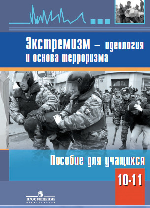

Тероризм и Экстремизм
Информация для обучающихся, родителей и педагогов
Методические рекомендации по действиям при угрозе совершения террористического акта в образовательной организации Донецкой Народной Республики Приказ о контрольно-пропускном режиме в учреждении Приказ об организации работы по противодействию экстремизму и терроризму Приказ о доступе в школу в нерабочее время Приказ о работе с документами, включенными в «Республиканский список экстремистских материалов» Приказ о создании антитеррористической группы МОЛОДЁЖЬ И АНТИТЕРРОР Научно-популярное издание
МОЛОДЁЖЬ И АНТИТЕРРОР Научно-популярное издание

Для учащихся средних и старших классов общеобразовательных школ, студентов вузов, их родителей, учителей и специалистов различных областей.
Экстремизм- идеология и основа терроризма 10-11 классы (учебное пособие) Данное пособие поможет разобраться:
- что такое терроризм;
- кто такие террористы и какие реальные цели они преследуют;
- чем вы можете помочь государству и обществу в борьбе с терроризмом и почему эта помощь важна;
- какова роль органов исполнительной власти, сотрудников специализированных подразделений спецслужб и правоохранительных органов, осуществляющих борьбу с терроризмом, в обеспечении безопасности общества;
- какова позиция государства в борьбе с терроризмом и экстремизмом; в чем заключается обман, которым окружают свою деятельность террористы и те, кто их направляет;
- в чем лживость мифов, в которых пытаются героизировать террористическую и экстремистскую деятельность лидеры и идеологи терроризма.
ПОЛЕЗНАЯ ИНФОРМАЦИЯ
Безопасность дорожного движения
Уважаемые педагоги и родители!
Рекомендуем Вам ознакомиться с интернет-ресурсами по безопасности дорожного движения и профилактике детского дорожно-транспортного травматизма
Федеральное государственное бюджетное учреждение культуры
«Всероссийский центр развития художественного творчества и гуманитарных технологий», рубрика «Безопасность дорожного движения», по ссылке: http://vcht.center/events/bdd/
Федеральное государственное бюджетное научное учреждение
«Институт изучения детства, семьи и воспитания», рубрика «федеральный ресурсный центр по профилактике детского дорожно-транспортного травматизма», по ссылке: https://институтвоспитания.рф/press-center/federalnyy-resursnyy-tsentr-po-profilaktike-ddtt/
Рабочие тетради для юных инспекторов движения. Рабочие тетради представляют собой сборники тематических заданий, направленных на формирование навыков безопасного поведения на дорогах. Рабочие тетради разработаны для детей 7-8, 9-10 и 11-14 лет. Электронные версии рабочих тетрадей размещены по ссылке: http://vcht.center/events/bdd/rabochie-tetradi-dlya-y..inspektorov-dvizheniya/ и доступны для скачивания
Цифровой реестр лучших образовательных практик по привитию навыков безопасного дорожного движения создан с целью трансляции лучших образовательных практик педагогическому сообществу. Реестр содержит в себе 27 образовательных практик, авторами которых являются победители Всероссийского конкурса «Лучший педагог по обучению основам безопасного поведения на дорогах» и Всероссийского педагогического фестиваля межпредметных проектов по безопасности дорожного движения. Реестр размещен по ссылке: https://praktiki.vcht.center/cases?topic=all&nom=..
Сайт Всероссийского конкурса «Лучший педагог по обучению основам безопасного поведения на дорогах» https://best-tutor-bdd.ru/ содержит конкурсные материалы победителей, призеров и участников. На сайте размещены методические разработки учебных занятий, мероприятий, включающие методические, дидактические, оценочные материалы к занятиям по профилактике детского дорожно-транспортного травматизма и педагогические кейсы по обучению безопасному поведению на дорогах. Также на сайте размещены видеообращения, содержащие контент по популяризации правил дорожного движения и предупреждению дорожно-транспортных происшествий с участием несовершеннолетних.
Видеоролики и методические рекомендации к ним размещены по ссылке: http://vcht.center/festival/bezopasnost-dorozhnogo-dv..rabot%D0%B0-s-roditelyami/ и доступны для скачивания.
Методические рекомендации по обеспечению организованной перевозки группы детей согласованы с ГУОБДД МВД России, Научным Центром безопасности дорожного движения МВД России, размещены по ссылке: https://xn—80adrabb4aegksdjbafk0u.xn--p1ai/press-center/federaln..profilaktike-ddtt/metodicheskie-rekomendatsii-po-obespecheniyu-organizovannoy-perevozki-gruppy-detey-avtobusami-dostup/
Методические карточки с памятками для обучающихся, родителей (законных представителей) обучающихся, педагогических работников, иных заинтересованных лиц, касающиеся правил перевозки детей в качестве пассажиров в транспортных средствах, правил поведения пешеходов, особенностей поведения на дорогах в различных погодных условиях, разработки маршрута «дом-школа- дом», других тематик в области БДД, размещены по ссылке: https://институтвоспитания.рф/press-center/federalnyy..profilaktike-ddtt/
Модульная дополнительная общеразвивающая программа по БДД и необходимые материалы для ее использования во Всероссийских детских центрах, в организациях отдыха детей и их оздоровления. ДООП предполагает обучение детей навыкам безопасного участия в дорожном движении в процессе освоения двух модулей: модуля «Основы знаний правил дорожного движения» и модуля «Профессионал дорожной безопасности». ДООП по БДД размещена по ссылке: http://vcht.center/events/bdd/doop-vdc.
Медицинская страничка
- Договор о совместной деятельности с "Центр первично медико-санитарной помощи № 5 города Донецка" от 10 июня 2019 года
- Государственные санитарные правила и нормы устройства, содержания общеобразовательных учебных заведений и организации учебно-воспитательного процесса ГСанПиН 5.5.2.008-01
- Санитарно-противоэпидемический режим. Санитарные требования к содержанию помещений и территории
- Министерство здравоохранения государственная санитарно-эпидемиологическая служба главный государственный санитарный врач Донецкой Народной Республики приказ 18.05.2015 № 50 г. Донецк
- 10 мифов о прививке от гриппа.
- Профилактика туберкулеза у детей и подростков
Памятка COVID-19
- Памятка клещевой энцефалит
- Снижение зрения у детей
- Что такое нарушение осанки? Каковы причины его появления?
- Профилактика гриппа и орви
- Внимание корь
- Профилактика острых кишечных инфекций
- Информационное письмо на тему: «Здоровый образ жизни в профилактике туберкулеза».
Туберкулез.
Знать, чтобы предупредить
Туберкулез – инфекционное заболевание, возбудителем которого являются микобактерии туберкулеза (МБТ).
Основными источниками инфекции являются:
- больные легочной формой туберкулеза, выделяющие возбудителей болезни с мокротой;
- больные туберкулезом животные;
- Возбудитель заболевания очень устойчив во внешней среде: в речной воде он сохраняется до 5 месяцев, на почве – 1-2 года, на продуктах, хранящихся в холодильнике – до 8-10 месяцев, в высохшей мокроте – до 12-18 месяцев. Особенно долго бактерия сохраняется в сырых непроветриваемых помещениях.
Губительно действует на возбудителя туберкулеза солнечный свет и ультрафиолетовые лучи.
Размножается только в организме человека или животного.
Пути передачи инфекции:
- Основной путь – воздушно-капельный. До 90 % людей заражаются при общении с больным открытой формой туберкулеза при кашле, чихании, разговоре. Капельки мокроты разбрызгиваются на расстоянии до 1,5-5 метров и могут находиться в воздухе до 1 часа. Здоровый человек, вдыхая туберкулезные палочки вместе с воздухом, может заразиться.
- Воздушно-пылевой – при вдыхании пыли, содержащей микобактерии, при чистке одежды, встряхивании белья больного.
- Контактно-бытовой путь встречается реже, в основном в очагах, где проживает больной открытой формой туберкулеза (через предметы обихода: посуду, постельные принадлежности, книги, при докуривании сигарет и т.п.), при несоблюдении рекомендуемых санитарно-гигиенических правил.
- Изредка регистрируется и пищевой путь заражения – при употреблении продуктов, полученных от больного туберкулезом животного (молоко, масло, мясо).
Факторы, способствующие заболеванию туберкулезом:
- наличие контакта с больными туберкулезом людьми или животными, выделяющими микобактерии;
-
ослабленный иммунитет, обусловленный:
- наличием хронических заболеваний органов дыхания (бронхиты, пневмонии и др.), сахарного диабета, язвенной болезни желудка и 12-ти перстной кишки, ВИЧ-инфекции/ СПИДа, гепатитов;
- длительным бесконтрольным приемом гормональных препаратов и антибиотиков;
- хроническим стрессом, депрессией, переутомлением;
- зависимостью от табакокурения, алкоголя, наркотиков;
- низким уровнем жизни (неудовлетворительными условиями труда и быта, пыльными и непроветриваемыми помещениями, неполноценным питанием, недостаточным отдыхом и ночным сном).
- Возрастно-половые особенности
- наиболее чувствительны к туберкулезной инфекции:
- дети 1-го года жизни, особенно новорожденные, т.к. защитное действие вакцины БЦЖ проявляется лишь через 1,5-2 месяца после вакцинации в роддоме;
- подростки – во время гормональной перестройки организма;
- пожилые люди старше 70 лет;
- мужчины болеют туберкулезом чаще, чем женщины.
Основные симптомы туберкулеза:
- быстрая утомляемость и появление общей слабости особенно в вечернее время;
- снижение или отсутствие аппетита;
- снижение массы тела (похудение);
- повышенная потливость, особенно в ночное время;
- незначительное повышение температуры тела (37,0-37,5° С) без видимой причины больше недели;
- одышка при небольших физических нагрузках;
- кашель или покашливание с выделением мокроты в течение 2-3 недель и более.
При появлении первых признаков заболевания следует обратиться в лечебное учреждение по месту жительства.
Самолечение опасно!
Основные методы раннего выявления туберкулеза:
- Для выявления факта инфицирования ребенка микобактериями туберкулеза используется внутрикожная диагностическая проба Манту с туберкулином. Проба проводится всем детям с 1 года до 15 лет ежегодно.

- У подростков (15-18 лет) и взрослых для выявления заболевания проводится флюорографическое обследование органов грудной клетки, которое позволяет выявить начальные признаки туберкулеза легких. Флюорография проводится 1 раз в год. Этот метод безвреден, т.к. доза рентгеновского облучения очень мала.

- Все лица, у которых есть симптомы подозрительные на туберкулез легких, должны обязательно сдать анализ мокроты для исследования на МБТ.
Как защитить себя от заболевания туберкулезом:
- Вести здоровый образ жизни:
- соблюдать режим труда и отдыха;
- придерживаться правил здорового питания;
- регулярно заниматься физкультурой и спортом;
- закалять свой организм;
- чаще бывать на свежем воздухе;
- проветривать учебные и жилые помещения, проводить влажную уборку;
- отсутствие или отказ от вредных привычек (курение, алкоголь, наркотики);
- соблюдать правила личной гигиены.
- Исключить покупку мясо-молочной продукции в несанкционированных местах торговли.
- Употреблять в пищу хорошо проваренное и прожаренное мясо, кипяченое молоко.
- Ежегодно обследоваться на туберкулез (проба Манту, флюорография).
- Своевременно делать профилактические прививки детям (в роддоме, в 7 лет).
- Вакцинированные дети редко заболевают туберкулезом, а в случае заболевания у них не развиваются тяжелые формы со смертельным исходом. Длительность действия вакцины составляет 7-10 лет.
- При подозрении на туберкулез нужно немедленно обратиться за помощью к врачу.
Информация для родителей
- Буклет-Родителям-будущих-первоклассников
- Рекомендации-родителям-по-адаптации-1-кл
- Рекомендации-родителям-по-адаптации-5-кл
- РОДИТЕЛЯМ О ПДД
- БЕСЕДА С РОДИТЕЛЯМИ ПО ПОЖАРНОЙ БЕЗОПАСНОСТИ
- Лекция для родителей. «Как избежать несчастных случаев с детьми. Предупреждение травматизма».
- Предупреждение пожаров